7 Interpretability for LLMs: Transparency, Applications and Scientific Insights in the Humanities
Overview
The field of explainable Artificial Intelligence (AI) garners increasing attention, yet a universally accepted definition of what constitutes an ‘explanation’, particularly within the machine learning community, remains an evolving concept. This chapter delves into the nuances of interpretability for Large Language Models (LLMs), exploring methods that offer transparency, practical applications, and the potential for novel scientific insights, especially within the humanities. We begin by establishing a foundational understanding of explanations in machine learning.

7.1 Understanding Explainable AI (XAI)
Historically, a significant portion of machine learning development centred on visual data, primarily images. Only in the last decade or so has the field intensified its focus on language, although foundational work in this area extends further into the past. The major shifts in language-focused AI, however, are relatively recent phenomena.
7.1.1 XAI 1.0: Feature Attributions
To comprehend the internal workings of ‘black box’ machine learning models, researchers initially concentrated on classification tasks. Typically, an input, such as an image containing a specific object, would be fed into a model, which would then, ideally, produce a correct prediction. Nevertheless, the user often remained unaware of the basis for this classification.
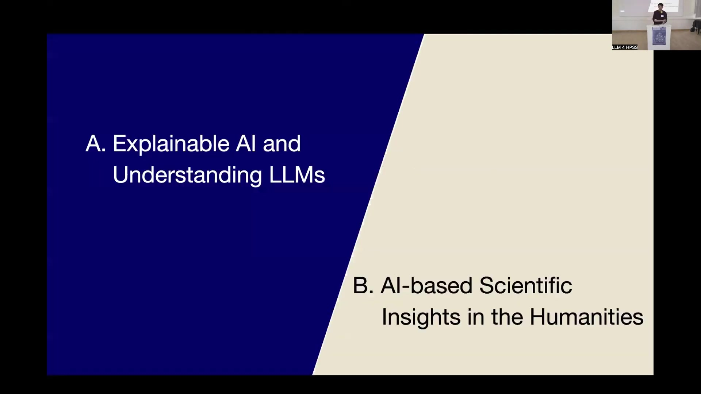
Consequently, the domain of explainable AI dedicated approximately a decade of research to understanding and tracing the origins of these predictions. A common output from such investigations was a heatmap, visually indicating which pixels were most influential in the model’s decision-making process. For instance, a heatmap might clearly show why a model recognised a rooster in an image.

7.1.2 The Rationale for Explainability
The pursuit of explainability addresses several critical needs. Primarily, it serves to verify predictions, ensuring that a model operates on a reasonable basis. Furthermore, explainability aids in correcting errors and understanding how models make mistakes. It can also illuminate the learning process itself, as models occasionally discover surprising or unconventional solutions to problems. Increasingly, explainability is vital for ensuring compliance with regulatory frameworks, such as the European AI Act.
7.2 The Advent of Generative AI: Expanding Capabilities and Challenges
The landscape of AI, once dominated by classification models, has undergone a significant transformation with the rise of Generative AI (GenAI) over approximately the last five years. This paradigm shift marks a departure from models designed for specific tasks towards those with multifaceted capabilities.

Unlike their predecessors, contemporary GenAI models can classify, identify similar images, generate entirely new images, and respond to queries on a vast array of topics. This versatility, however, introduces considerable complexity in grounding a model’s prediction or an LLM’s answer to specific input features. The following discussion explores avenues beyond simple heatmap representations, considering feature interactions and more mechanistic perspectives to understand these advanced systems. Today’s foundation models function not only as multi-task systems but also as models of the world, capturing insights about society and the evolution of textual features over time, which underpins much of the current interest in them.
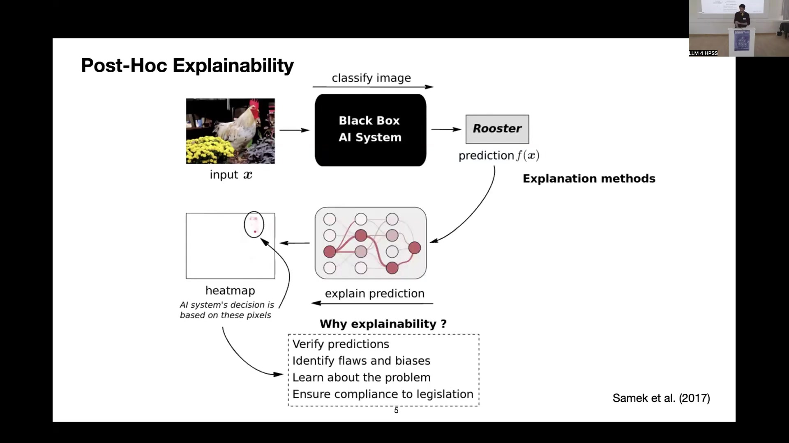
7.3 The Imperative of Recognising Model Errors
It is crucial to acknowledge that even advanced models can, and do, make surprising mistakes. Two well-documented examples illustrate this point. In one instance, a standard object classifier incorrectly based its identification of a boat on the surrounding water rather than the boat itself. The water, being a correlated feature and texturally simpler to detect, became the misleading focal point for the model (Lapuschkin2019?).
Another, more recent, example involves multi-step planning errors in LLMs. When tasked with the Tower of Hanoi puzzle—moving disks from a starting peg to a destination peg according to specific rules—an LLM might incorrectly attempt to move the largest, inaccessible disk directly to the target. This demonstrates a failure to comprehend the fundamental physical constraints of the problem (MondalWebb2024?). While more recent reasoning models may exhibit improved performance, such errors have been observed in fairly standard models like Llama 3.something.
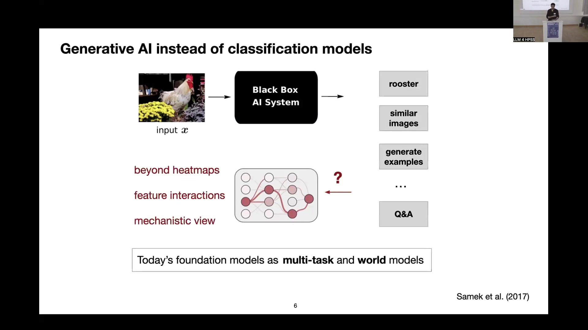
7.4 XAI 2.0: Towards Structured Interpretability
To move beyond the limitations of heatmap-based explanations, the concept of structured interpretability offers a more nuanced approach to understanding model behaviour. This progression is sometimes referred to as XAI 2.0.
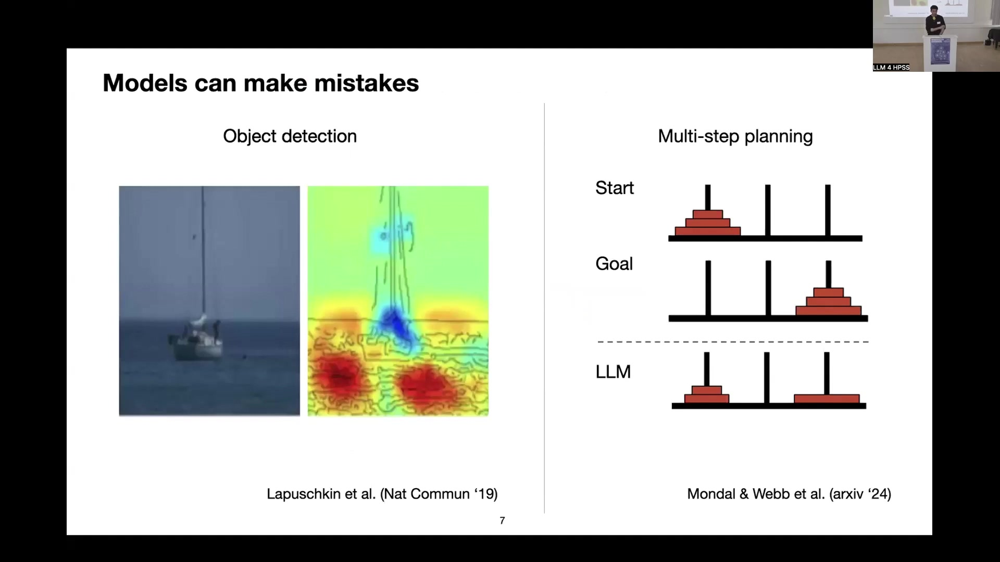
7.4.1 First-Order Explanations: Identifying Key Features
First-order explanations, as previously touched upon, are particularly useful for elucidating the decisions of classifiers. They allow for the generation of heatmaps that highlight influential features. For instance, in a project involving a table classifier for historical data, the goal was to distinguish subgroups within these tables. To ensure the classifier operated meaningfully, heatmaps verified that its predictions were based on relevant features. Indeed, these visualisations confirmed that the model correctly focused on numerical content to identify numerical tables—a sensible proxy.

7.4.2 Second-Order Explanations: Uncovering Pairwise Relationships
Investigations then extended to second-order features, where pairwise relationships between features became significant. This was particularly evident when examining similarity. For example, when calculating a similarity score (e.g., a dot product) between the embeddings of two images or, in this context, two tables, explaining this prediction reveals the importance of feature interactions. Such explanations can highlight interactions between specific digits, confirming, for instance, that two tables are identical and that the model functions as intended.
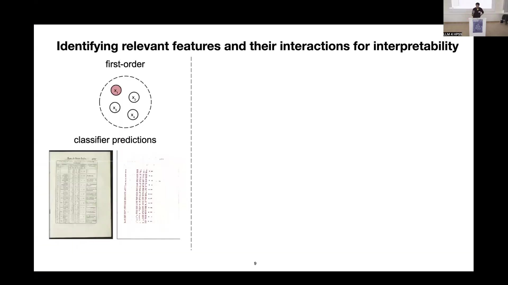
7.4.3 Higher-Order Interactions: Revealing Complex Structures
More recent work delves into graph structures, where higher-order interactions prove more meaningful. Consider a citation network, or a network of books or other entities, upon which a classification task is trained. In such scenarios, subgraphs or feature walks—sets of features that become relevant collectively—can be identified. This approach yields more complex insights into model behaviour and moves towards a circuit-level understanding of their operations. These explorations represent ongoing efforts in the field of interpretability.
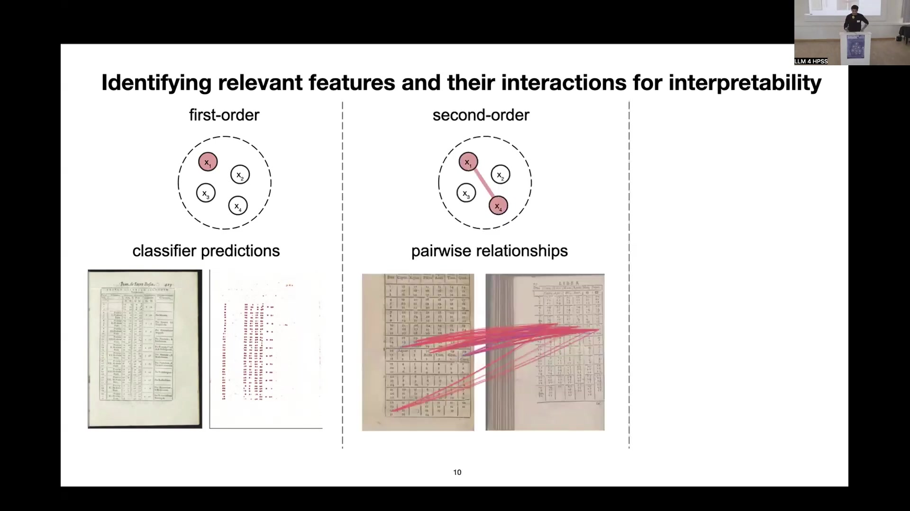
7.5 Applications in Language and the Humanities
The principles of structured interpretability find compelling applications when analysing language models and deriving insights within humanities research.
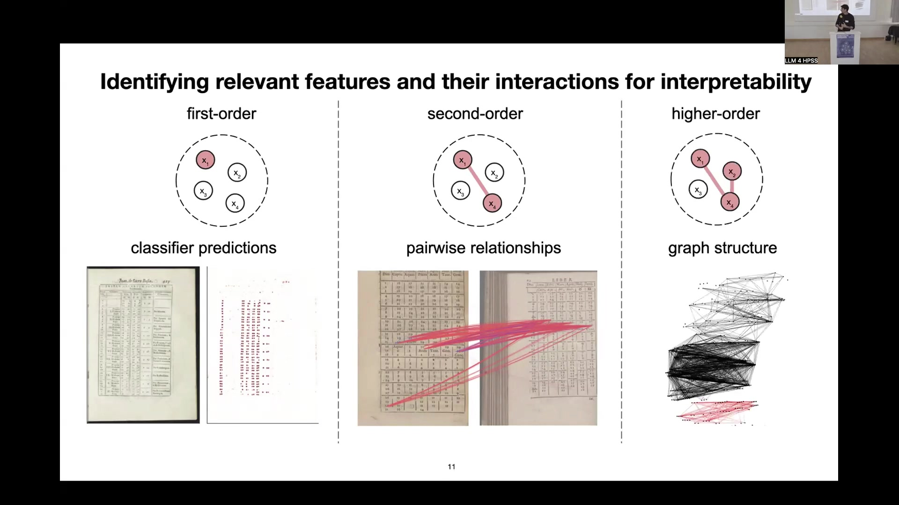
7.5.1 First-Order Attributions in LLMs: Sentiment Prediction and Bias Detection
A standard application for first-order attributions involves sentiment prediction, often using movie reviews—a common dataset in the language processing community. By training a model on such reviews and subsequently examining the basis of its predictions, researchers can gain valuable insights. Heatmaps, generated using methods tailored for transformers, can rank sentences and highlight influential tokens.

Such analyses have revealed that certain features disproportionately affect sentiment scores. For example, male Western names (e.g., Lee, Barry, Raphael, or references to the Cohen brothers) tend to correlate with positive reviews. Conversely, names perceived as foreign (e.g., Saddam, Castro, Chan) are more likely to be associated with negative scores. These findings underscore the presence of biases within models, a well-recognised issue in the AI community. Explainable AI techniques prove highly effective in detecting these fine-grained biases.
7.5.2 First-Order Attributions for Long-Range Dependencies in LLMs
Another area of investigation concerns long-range dependencies in LLMs. In a typical scenario, an LLM processes a long context window—perhaps up to 8,000 tokens from Wikipedia articles—and is then prompted to generate a summary. The model begins to produce free text, and the objective is to determine the origin of this generated information within the provided context. Specifically, researchers explore whether models can effectively utilise information from distant parts of the input.
Findings indicate that models predominantly focus on the latter portions of the context, prioritising information presented more recently. While they can access and pull information from earlier in the context, doing so is significantly less probable (note that analyses often use a log scale for counts). This tendency is important to bear in mind when using LLMs for summarisation; the output may not be a balanced representation of the entire text but rather skewed towards content nearer to the prompt (Jafari2024?).

7.5.3 Second and Higher-Order Interactions in Text
Moving to second and higher-order interactions, consider a standard scenario involving sentence embeddings. Given a pair of sentences, such as “A cat I really like” and “It is a great cat,” a model (e.g., BERT or Sentence-BERT) produces an embedding and a similarity score. However, the reasons behind this specific similarity value often remain opaque.
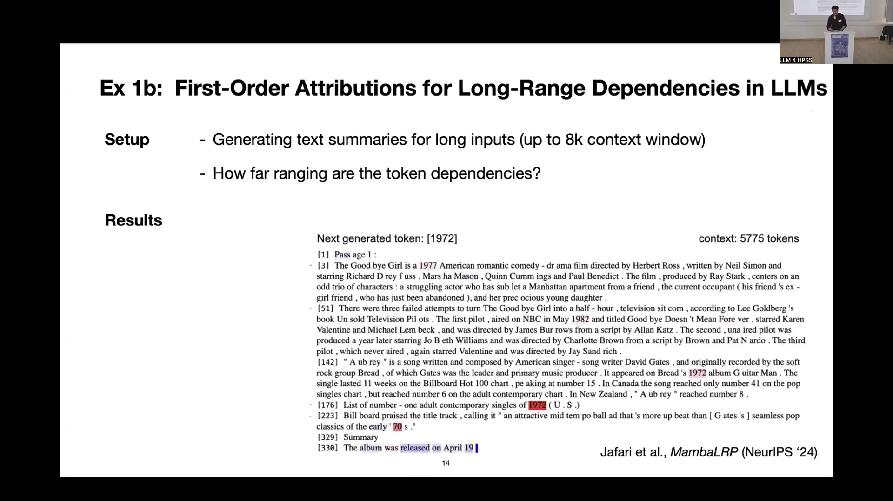
Second-order explanations can illuminate these reasons by providing interaction scores between tokens. These scores reveal why the model considered the sentences highly similar. Even in toy examples, common patterns emerge, such as noun-matching strategies (synonyms or identical noun tokens), noun-verb interactions, and connections involving separator tokens. The model’s strategy often resembles a ‘bag of token types’. This suggests that, despite their complexity, models are forced to compress vast amounts of information and, in doing so, may rely on relatively simplistic strategies. This observation, perhaps not immediately intuitive, is relevant for anyone embedding data and subsequently ranking items based on similarity.
7.5.4 Graph Neural Networks for Structured Predictions in Language
Graph Neural Networks (GNNs) offer another avenue for exploring structured information, yielding attributions in terms of ‘walks’ or feature interactions. Intriguingly, GNNs, which inherently encode structural information, can be framed as LLMs. This is because the attention mechanism within transformers essentially dictates how tokens can ‘message pass’ or influence one another. This conceptual link allows for the application of GNN-based interpretability methods to language.

For example, standard first-order explanations (akin to a Bag-of-Words approach) may fail to capture the complexity of language, such as negation. A sentence like “First, I didn’t like the boring pictures” might receive a high positive score simply due to the presence of “like,” overlooking the negation. In contrast, more sophisticated higher-order explanation methods can correctly identify that the initial negative phrase contributes negatively, whilst the subsequent positive part of a sentence (“but it is certainly one of the best movies I have ever seen”) is appropriately recognised, respecting the hierarchical structure of the language. This demonstrates how higher-order interactions can lead to a more accurate understanding of complex linguistic structures. Natural language’s hierarchical nature is well-suited to graph representations, and training a GNN (or an LLM framed as such) on tasks like movie review sentiment analysis allows for the extraction of these insightful walks (Schnake2022?).
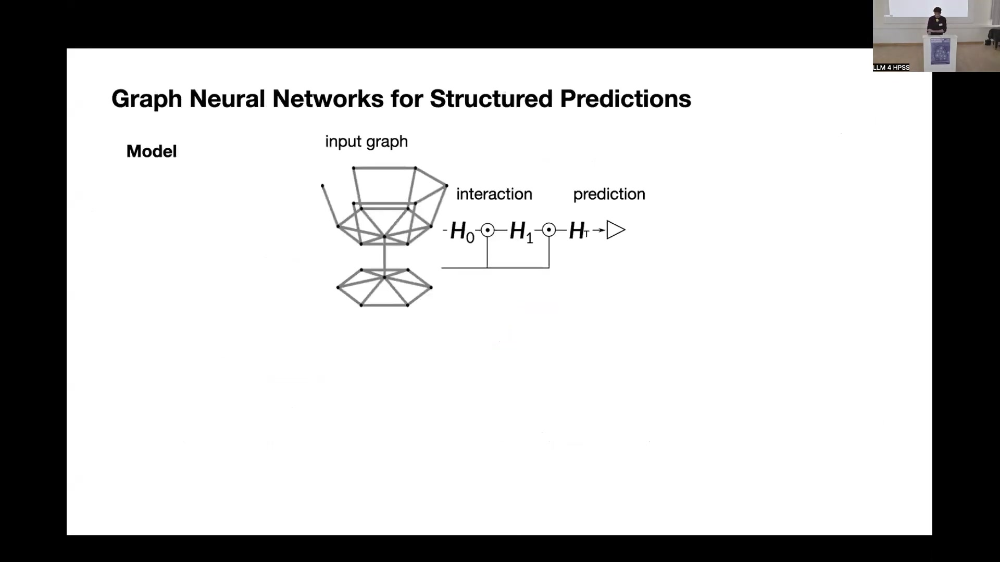
7.6 AI-driven Scientific Insights in the Humanities
The application of AI, particularly explainable AI (XAI), extends into the humanities, offering novel methodologies for research and discovery. These techniques can help to analyse complex historical and cultural data at scale.

7.6.1 Extracting Visual Definitions from Corpora
Initial explorations using heatmap-based approaches have proven fruitful in projects involving historical artefacts. For instance, when working with a corpus of mathematical instruments, a classifier was developed to categorise items (e.g., as a ‘machine’ or a ‘mathematical instrument’). In collaboration with historians (Matteo Valleriani, Jochen Büttner, and others), these visual definitions generated by the AI were scrutinised to determine if they could provide more objective classification criteria. This process underscores the necessity of close collaboration with domain experts to ensure the meaningfulness of AI-derived definitions. One finding from this work was that fine-grained scales on mathematical instruments are highly relevant features for the model’s decision-making process (ElHajjEberle2023?).
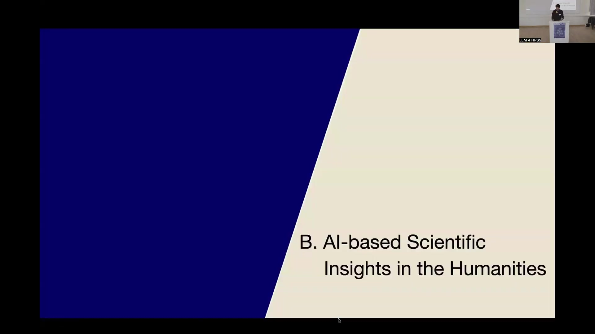
7.6.2 Corpus-Level Analysis of Early Modern Astronomical Tables
A more extensive collaborative project focused on numerical tables from early modern texts, specifically the Sphaera corpus (1472-1650) (Valleriani2019?). Historians approached the Berlin Institute for Learning and Data (BIFOLD) with this data, seeking an automated method to match tables with similar semantics—a task previously unfeasible at scale.

7.6.2.1 The XAI-Historian: Aiding Historical Research
Together, a workflow was developed to assist historians in gaining insights from this large-scale data. This collaboration gave rise to the concept of the ‘XAI-Historian’—an historian equipped with AI and XAI tools to discover case studies and engage in more data-driven hypothesis generation. Instead of feeding entire tables into a large foundation model (which proved ineffective due to the out-of-domain nature of the data), a smaller, custom model was trained to detect numerical bigrams (pairs of adjacent numbers). XAI methods then verified that this model functioned as intended; for example, by confirming that identical bigrams (e.g., ‘38’ and ‘38’) in two different input tables were correctly identified and matched. This validation engendered trust in the model’s decisions, allowing its use for broader analysis (Eberle2024SciAdv?).
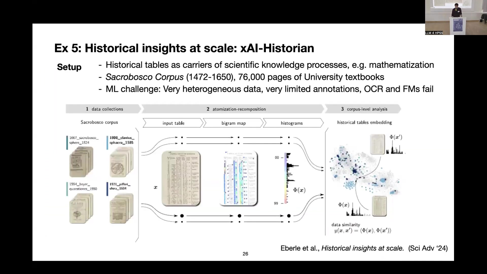
7.6.2.2 Verifying Modelling and Features using XAI and Historians
Historical tables serve as carriers of scientific knowledge processes, such as the mathematisation of science. Representing these tables using a ‘bag of bigrams’ (e.g., ‘01’ or ‘21’) became a key strategy, especially given limited annotations. This involved a learned feature extractor combined with hard-coded structural information. The bigram model’s performance, when verified by expert ground truth, showed strong histogram correlations and superior cluster purity compared to unigram or standard VGG-16 approaches, confirming its efficacy (Eberle2022TPAMI?; Eberle2024SciAdv?).
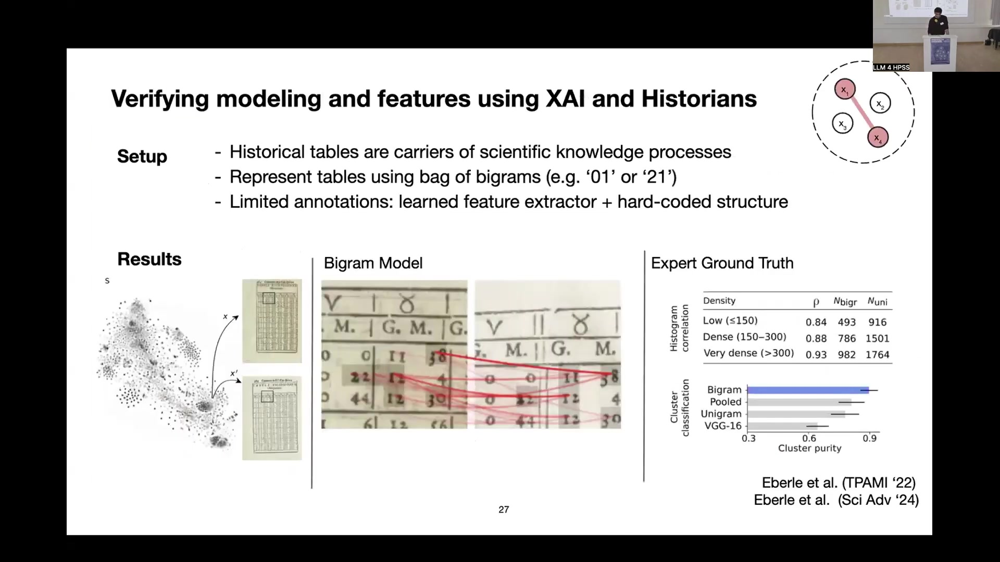
7.6.2.3 Cluster Entropy Analysis for Innovation Insights
With a reliable model for table representation, case studies commenced. Cluster entropy was employed to investigate the spread of innovation across Europe during the early modern period. The publishing output of various cities was analysed; each city produced a ‘programme’ of printed works, some more diverse than others. Some locations focused on reprinting existing materials, whilst others fostered greater novelty. Quantifying this diversity at scale was previously challenging.
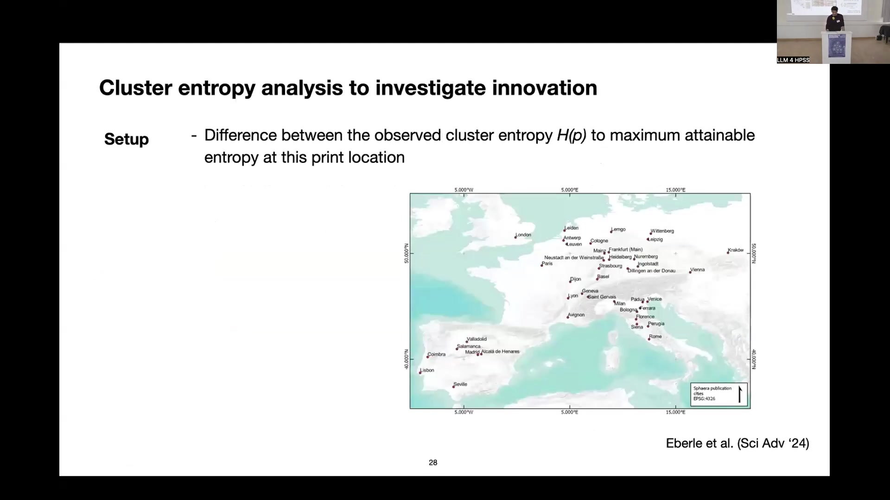
The approach involved using the model-derived representations to perform distance-based clustering of tables. The entropy of these clusters for each city then served as a measure of its print programme’s diversity. A low entropy score indicated repetitive content, whereas a higher entropy score signified a more varied output. This analysis identified Frankfurt and Wittenberg as cities with particularly low entropy. Frankfurt am Main was already known as a centre for reprinting editions. More strikingly, Wittenberg’s low diversity was linked to political control by Protestant reformers, who actively limited the print programme and dictated the curriculum to be published. This AI-driven finding corroborated existing historical intuition and uncovered a quantifiable aspect of this historical anomaly (Eberle2024SciAdv?).
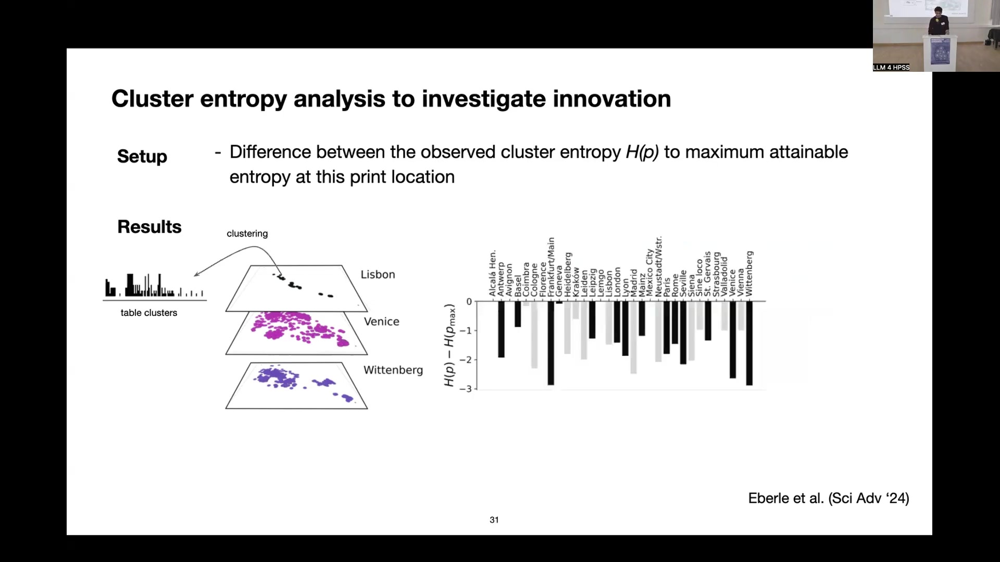
7.7 Conclusion: The Evolving Role of AI-based Methods in the Humanities
The integration of AI-based methods into humanities research presents both significant opportunities and distinct challenges.
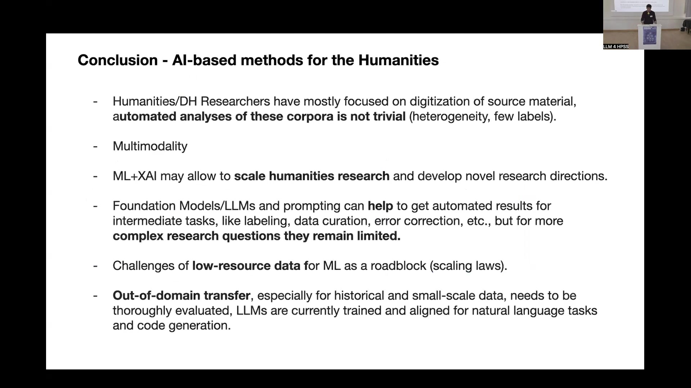
Humanities and Digital Humanities (DH) researchers have historically focused extensively on the digitisation of source material. However, the automated analysis of these corpora is far from trivial, often complicated by data heterogeneity and a scarcity of labels. Multimodality further compounds these complexities.
Nevertheless, Machine Learning (ML) and Explainable AI (XAI) offer the potential to scale humanities research and foster novel research directions. Foundation Models, including LLMs, alongside prompting techniques, can assist with intermediate tasks such as labelling, data curation, and error correction. For more complex research questions, however, their utility currently remains limited.
A primary roadblock is the challenge posed by low-resource data, which impacts the scaling laws fundamental to many ML models. Furthermore, out-of-domain transfer, especially for historical and small-scale datasets, requires thorough evaluation. Current LLMs are predominantly trained and aligned for natural language tasks and code generation, and their applicability to specialised humanities data cannot be assumed without careful validation. Continued interdisciplinary collaboration will be crucial in navigating these challenges and harnessing the full potential of AI in enriching our understanding of the human past and its cultural artefacts.
Note: A bibliography.bib file with the following (or similar) entries would be required for the citations to render correctly: (article?){Samek2017, title={Explainable artificial intelligence: Understanding, visualizing and interpreting deep learning models}, author={Samek, Wojciech and Wiegand, Thomas and M{"u}ller, Klaus-Robert}, journal={ITU Journal: ICT Discoveries}, volume={1}, number={1}, pages={39–57}, year={2017} } (article?){Lapuschkin2019, author = {Lapuschkin, Sebastian and W{"a}ldchen, Stephan and Binder, Alexander and Montavon, Gr{'e}goire and Samek, Wojciech and M{"u}ller, Klaus-Robert}, title = {Unmasking Clever Hans predictors and assessing what machines really learn}, journal = {Nature Communications}, volume = {10}, number = {1}, pages = {1096}, year = {2019}, doi = {10.1038/s41467-019-08987-4} } (misc?){MondalWebb2024, author = {Mondal, ShB and Webb, N and others}, title = {Multi-step planning mistakes of LLMs}, year = {2024}, eprint = {arXiv:xxxx.xxxxx}, archiveprefix = {arXiv} } (inproceedings?){Jafari2024, title={MambaLRP: Long-Range Positive Explanations for Mamba Models}, author={Jafari, Ali and others}, booktitle={Advances in Neural Information Processing Systems (NeurIPS)}, year={2024} } (article?){Schnake2022, author = {Schnake, Thomas and Eberle, Oliver and Sch{"u}tt, Kristof T. and M{"u}ller, Klaus-Robert and Samek, Wojciech}, title = {Higher-Order Explanations of Graph Neural Networks via Relevant Walks}, journal = {IEEE Transactions on Pattern Analysis and Machine Intelligence (TPAMI)}, volume = {45}, number = {5}, pages = {5995–6007}, year = {2022}, doi = {10.1109/TPAMI.2022.3202015} } (book?){Valleriani2019, editor = {Valleriani, Matteo}, title = {The Sphaera Corpus: A Collection of Texts Written in the Context of the Medieval Study of the Sphere}, publisher = {Max Planck Institute for the History of Science}, year = {2019}, series = {Edition Open Access} } (article?){ElHajjEberle2023, author = {El-Hajj, Hiba and Eberle, Oliver and others}, title = {Explainability and transparency in the realm of DH}, journal = {International Journal of Digital Humanities}, year = {2023}, doi = {10.1007/s42803-023-00069-0} } (article?){Eberle2024Sacrobosco, author = {Eberle, Oliver and others}, title = {The Sacrobosco Table Corpus (1472-1650)}, year = {2024}, note = {Details to be confirmed} } (article?){Eberle2024SciAdv, author = {Eberle, Oliver and Valleriani, Matteo and B{"u}ttner, Jochen and others}, title = {Historical insights at scale: Automated analysis of early modern astronomical tables with explainable AI}, journal = {Science Advances}, year = {2024}, doi = {10.1126/sciadv.adk1000} } (article?){Eberle2022TPAMI, author = {Eberle, Oliver and others}, title = {Learning Semantic Similarity for Numerical Tables}, journal = {IEEE Transactions on Pattern Analysis and Machine Intelligence (TPAMI)}, year = {2022}, doi = {10.1109/TPAMI.2022.xxxxxxx} }